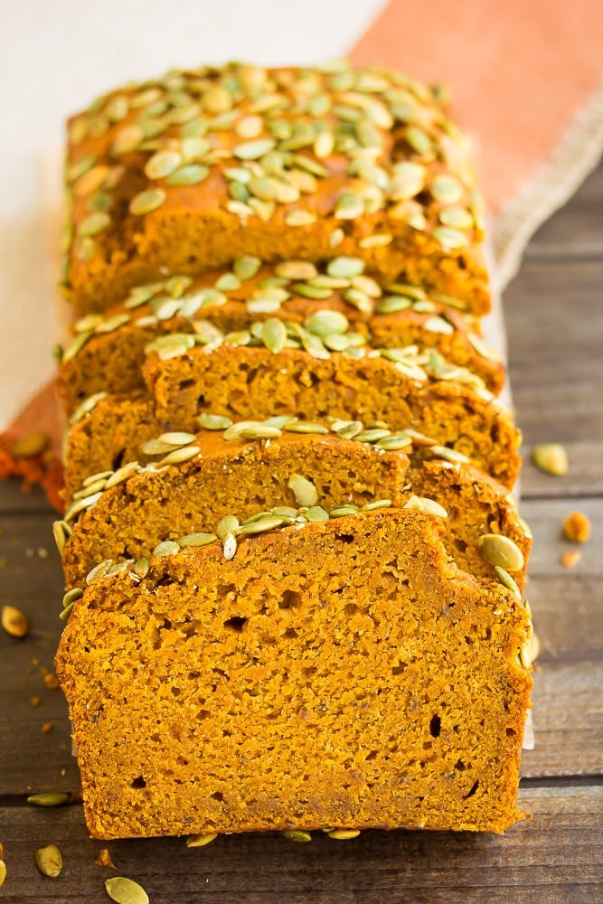

This post may contain affiliate links. Read my full disclosure here.
This is seriously the best vegan pumpkin bread you’ll ever eat! It’s perfectly spiced, moist and easy to make in 1 bowl. Better than Starbucks, this will become one of your favorite Fall recipes!
This is one of those recipes that took me quite a few tries to get it just right. Even once I did, I tested again to make absolutely sure! Yep, this is the best pumpkin bread ever. And better yet, it’s vegan!
No one would ever guess this pumpkin bread is vegan. It’s so moist, fluffy, sweet and perfectly spiced with cinnamon, nutmeg and cloves. The bread slices beautifully once cooled, and it tastes better than the popular Starbucks pumpkin bread. I’m not kidding on that one, I had several people tell me it was better than Starbucks when they ate it!